CARE es el sistema hospitalario open-source que nació durante el colapso de la pandemia en India. Se ha desplegado en varios estados a través del proyecto 10BedICU y está certificado como Bien Público Digital por las Naciones Unidas. Nosotros le aplicamos Scrum y DevOps.
CARE no surgió de un laboratorio corporativo. Fue una respuesta de emergencia de voluntarios de tecnología cuando el sistema de salud de India colapsaba. Hoy es uno de los sistemas hospitalarios open-source más activos del mundo.
care (Python/Django) y
care_fe (React/TypeScript). Sistema de
plugins que permite a estados e
instituciones extender el sistema sin modificar el
núcleo.
El backend expone APIs organizadas por dominio clínico. El
frontend implementa vistas para cada dominio, corriendo en
localhost:4000 durante desarrollo.
Recorrido paso a paso por el sistema CARE funcionando en entorno local, detallando la interacción entre las vistas en React (puerto 4000) y los endpoints en Django (puerto 9000).
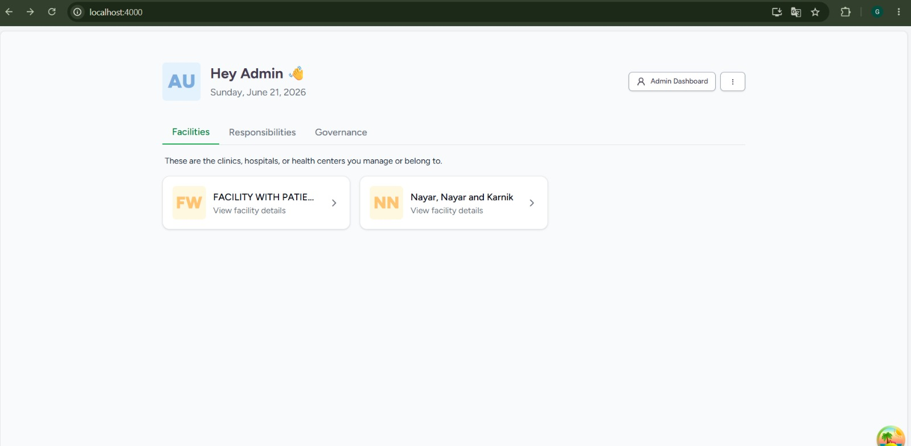
Es la puerta de entrada del sistema, accesible sin haber iniciado sesión. Ofrece dos caminos según quién llega: un buscador de establecimientos para pacientes nuevos que quieren reservar una cita, y dos botones de ingreso según el tipo de usuario: "Log in as Staff" para personal del hospital (médicos, enfermeras, administradores) y "Log in as Patient" para pacientes.
Esta separación desde el inicio refleja una decisión de diseño importante del producto: CARE distingue dos mundos de usuarios con permisos y vistas completamente distintas. El personal accede a la gestión clínica y administrativa; el paciente solo a sus propias citas. Esa distinción la hace cumplir el módulo de seguridad en cada petición.
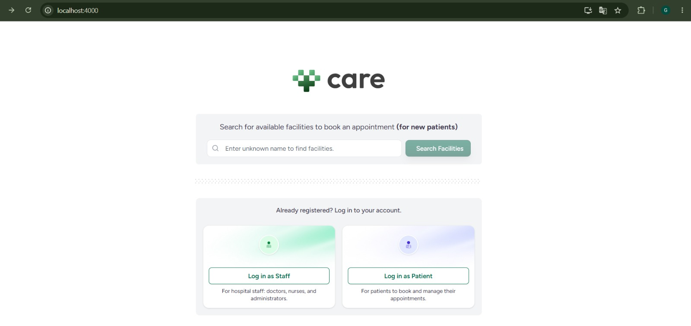
Pantalla de inicio de sesión para el personal.
El sistema valida las credenciales contra el
backend y, si son correctas, emite un token JWT
que identifica al usuario en todas las
peticiones siguientes. Aquí se ingresó con el
superusuario admin.
Detalles relevantes: Primero, abajo a la izquierda aparece el sello de la Digital Public Goods Alliance, evidencia directa de la legitimidad del producto como Bien Público Digital reconocido por las Naciones Unidas. Segundo, abajo a la derecha se encuentran los idiomas disponibles (inglés, tamil, malayalam, marathi, etc.), lo que sustenta la internacionalización incorporada en el sistema.
Técnicamente, esta pantalla prueba la comunicación entre capas: el login solo funciona si la petición viaja al puerto 9000, valida contra la base de datos PostgreSQL y regresa el token.
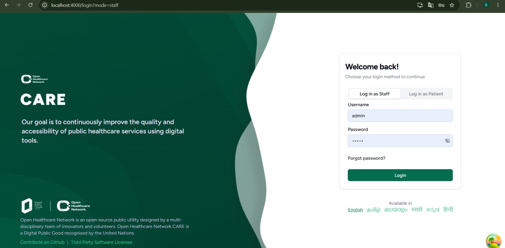
Una vez dentro, el sistema saluda al usuario ("Hey Admin") y muestra los establecimientos que administra o a los que pertenece. Aquí se ven dos establecimientos reales cargados en la base de datos: "FACILITY WITH PATIENTS" y "Nayar, Nayar and Karnik".
Las tres pestañas superiores (Facilities, Responsibilities, Governance) organizan la vida del usuario en el sistema. Desde aquí, el usuario elige el establecimiento en el cual va a trabajar para cargar todos sus correspondientes submódulos.
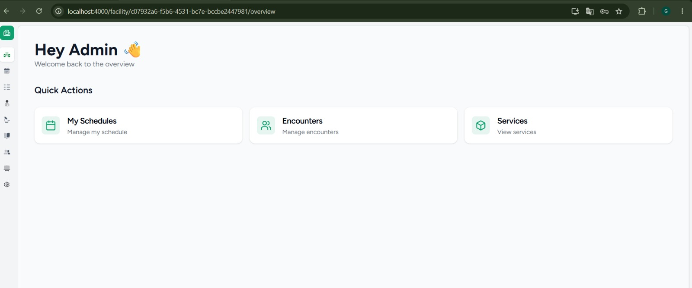
Al entrar a un establecimiento se abre su panel de control, con una barra lateral de iconos que da acceso a todos los módulos: agenda, encuentros, pacientes, citas, usuarios, recursos, servicios y configuración. Las "Quick Actions" ofrecen accesos rápidos a las tareas más comunes como gestionar horarios (My Schedules), encuentros clínicos (Encounters) y servicios (Services).
Esta pantalla es el centro de operaciones. Todo
lo que ocurre clínicamente (admitir un paciente,
registrar una atención, agendar una cita) parte
de aquí. El módulo facility es el
contenedor: cada paciente, cama, recurso o
usuario existe siempre dentro de un
establecimiento.
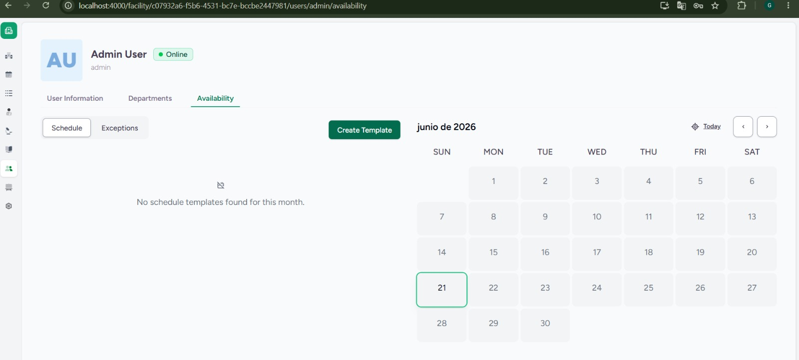
Muestra las personas registradas en el sistema,
cada una con su rol claramente identificado (por
ejemplo: Keya Dora es voluntaria, Triveni Bali
es administradora, Viraj Buch es enfermera, Irya
Keer es doctora). El usuario
Admin aparece "Online" porque es la
sesión activa.
Esta pantalla demuestra el corazón del control
de acceso por roles (RBAC) del
sistema. Cada usuario tiene asignado un rol
específico que determina de forma estricta qué
puede ver y hacer en la interfaz, validado y
forzado por el módulo security en
cada petición.
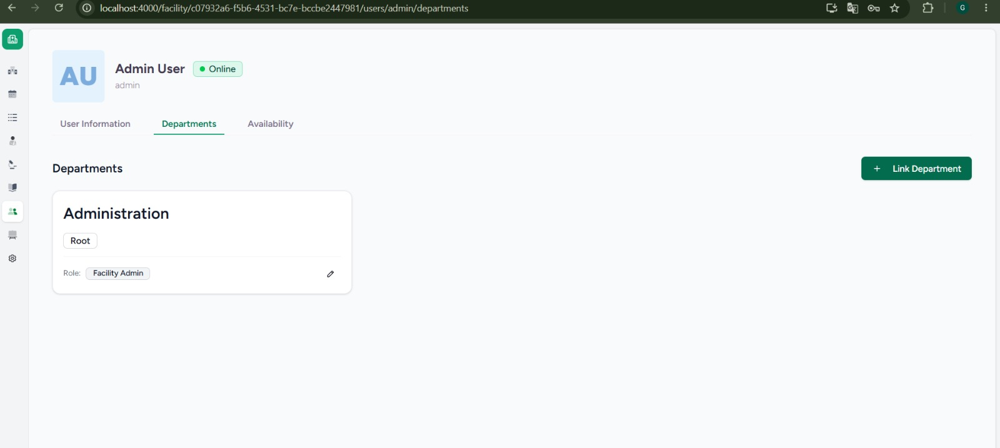
El perfil completo de un usuario, organizado en
secciones claras: información básica (nombre,
prefijo, género), información de contacto
(correo electrónico, teléfono) y, al pie, las
asignaciones de responsabilidad. Se aprecia que
el usuario admin pertenece al
"Health Department" con rol de Admin.
Demuestra la riqueza del modelo de datos de
users: una cuenta de usuario es una
entidad con múltiples dimensiones de contacto,
seguridad y responsabilidades dentro de la
jerarquía organizacional.
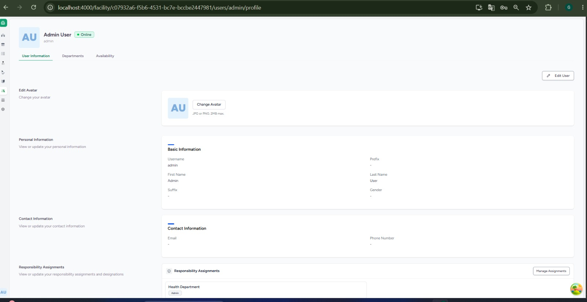
Muestra a qué departamentos está vinculado el
usuario dentro del establecimiento. Aquí el
usuario admin pertenece al
departamento "Administration",
marcado como "Root" (raíz de la jerarquía), con
el rol de "Facility Admin".
Representa cómo se interconectan los módulos:
users define a la persona, pero el
vínculo persona-departamento-establecimiento
depende del módulo facility, que
modela la estructura organizativa física y
lógica.
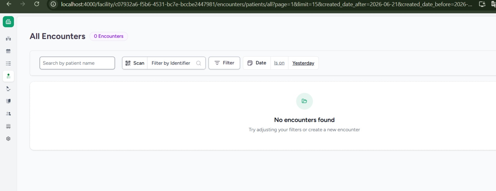
Calendario mensual donde se define la disponibilidad del personal de salud. Aquí se configuran las plantillas de horario (Create Template) que permiten a los pacientes reservar citas en los espacios libres del profesional. El día actual (21 de junio de 2026) aparece destacado.
Esta vista conecta directamente a las personas
(users) con el sistema de
agendamiento. Sin horarios definidos, no se
pueden generar los slots requeridos para el
módulo de citas.
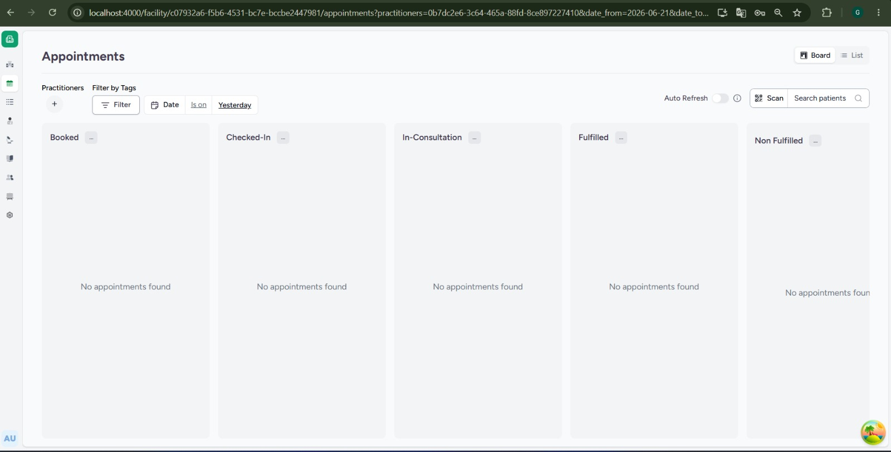
Esta pantalla es el corazón del módulo EMR (Historia Clínica Electrónica). Un "encuentro" representa cada episodio de atención de un paciente (consulta, admisión, emergencia). Permite buscar pacientes, escanear identificadores y filtrar por fechas.
En la captura se ve el sistema filtrando
encuentros por fecha (muestra cero para el
filtro aplicado, porque los encuentros de prueba
están en otra fecha), lo que demuestra que la
herramienta de búsqueda y filtrado funciona. El
módulo emr es el más importante a
nivel clínico: depende de
facility (el encuentro ocurre en un
local), de users (médico que
atiende) y de security (resguardo
de datos clínicos sensibles).
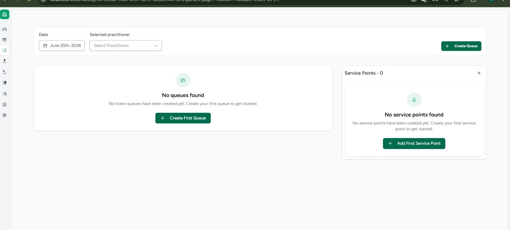
Tablero tipo Kanban que organiza las citas médicas según su estado actual: Booked (reservada), Checked-In (paciente llegó), In-Consultation (en consulta), Fulfilled (atendida) y Non Fulfilled (no cumplida). Cada cita se arrastra y avanza por estas columnas a lo largo del día.
Es un excelente ejemplo de flujo de proceso:
muestra el ciclo de vida completo de la cita
médica, integrando la disponibilidad
(scheduling) con el encuentro
clínico real (emr) cuando el
paciente ingresa a consulta.
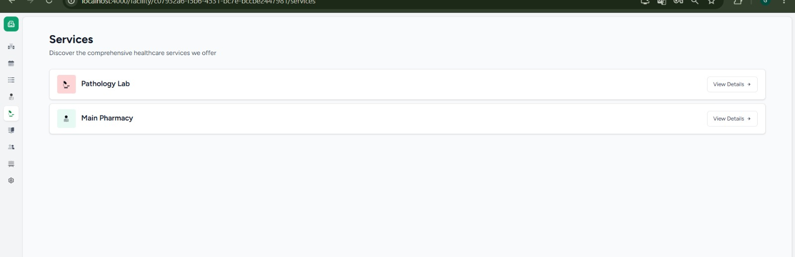
Gestión operativa de colas de tokens y puntos de servicio en el establecimiento. Permite crear colas de espera físicas o virtuales y definir puntos de atención específicos para ordenar la afluencia de pacientes en hospitales de alta demanda.
Muestra la profundidad logística de CARE: además
del registro clínico, se encarga de la gestión
de flujos de tránsito dentro de la clínica.
Pertenece al módulo facility como
recursos del establecimiento.
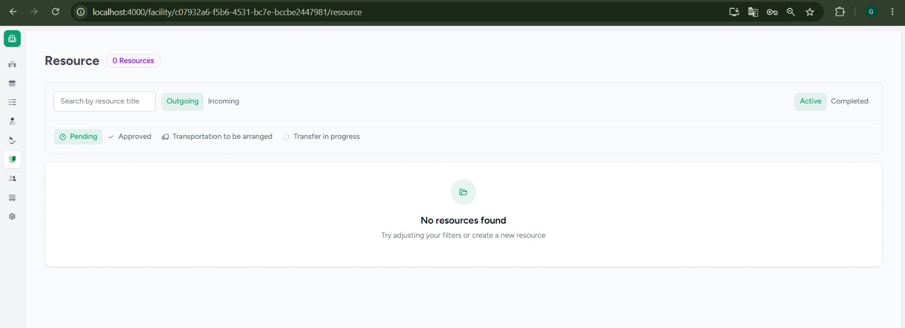
Detalle de los servicios de salud que ofrece la institución. En los datos de prueba se observan un laboratorio de patología (Pathology Lab) y una farmacia principal (Main Pharmacy). Cada uno cuenta con vistas de detalles y flujo de órdenes.
El laboratorio se enlaza con las órdenes de
exámenes generadas durante los encuentros
clínicos (emr), mientras que la
farmacia interactúa con el registro y
dispensación de medicamentos indicados por el
médico.
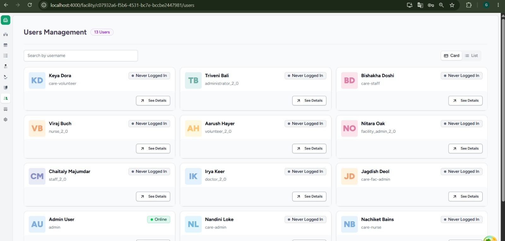
Módulo de recursos para gestionar traslados de pacientes y derivaciones de suministros críticos entre centros médicos. Organiza las solicitudes en estados (Pendiente, Aprobada, Transporte, En Progreso) y las clasifica en salientes (Outgoing) y entrantes (Incoming).
Contexto de origen: Esta
funcionalidad nació por la escasez de oxígeno y
saturación de camas UCI en India durante la
pandemia. Permite conectar los establecimientos
del módulo facility como una red de
soporte y vincular los expedientes clínicos de
emr.
Guía rápida de interdependencias en la arquitectura de CARE. Este análisis sirve como respuesta clave ante preguntas de examen sobre el acoplamiento y cascada de cambios.
Qué hace: Autenticación, validación de sesiones JWT y control de accesos por roles (RBAC).
De qué depende: De nadie. Es la base sobre la que descansan todos los demás módulos.
Qué hace: Registro y datos maestros del personal, credenciales, datos de contacto y roles.
De qué depende: Directamente de
security para poder iniciar sesión
y verificar permisos.
Qué hace: Estructura física del hospital, camas, ventiladores, inventario y colas operativas.
De qué depende: De
users (para asignar el personal) y
de security para accesos.
Qué hace: Registro de pacientes, creación de encuentros clínicos, historial médico y observaciones FHIR.
De qué depende: De
facility (sitio físico),
users (médico) y
security (acceso clínico).
Qué hace: Gestión de disponibilidad de médicos, plantillas de horarios y reserva de citas.
De qué depende: De
users (disponibilidad del
profesional) y de facility (lugar
de la cita).
Qué hace: Registro inmutable de actividades clínicas y administrativas para auditorías.
De qué depende: De
users y security.
Lo invocan todos los módulos.
"Security está debajo de todo": si
se modifica security, se altera el
acceso a todo el sistema. Del mismo modo,
facility es el contenedor físico y
lógico, afectando directamente a los módulos que se
cargan dentro. Por el contrario, hacer
modificaciones en audit_log es de
bajísimo riesgo, dado que actúa puramente como un
registrador pasivo y ningún otro componente depende
de su lógica de negocio.
Un viaje visual a través de cada pantalla y módulo de CARE. Desde el login hasta la gestión de transferencias hospitalarias: 13 vistas que demuestran cómo opera el sistema en la práctica clínica.
Tecnologías verificadas directamente en los repositorios oficiales. Backend en Python moderno con Django REST Framework; frontend en React con TypeScript. Orquestado con Docker Compose.
make up.
Incluido en el repo oficial.
Cada sprint dura dos semanas. El proyecto evolucionó de una evaluación inicial de Danphe EMR a CARE, sobre el cual se construyó todo el backlog y la planificación de los sprints.
Total: 34 historias de usuario · 189 Story Points · 7 épicas · 4 sprints.
Equipo de cinco integrantes con roles Scrum definidos: Product Owner, Scrum Master y equipo de desarrollo.